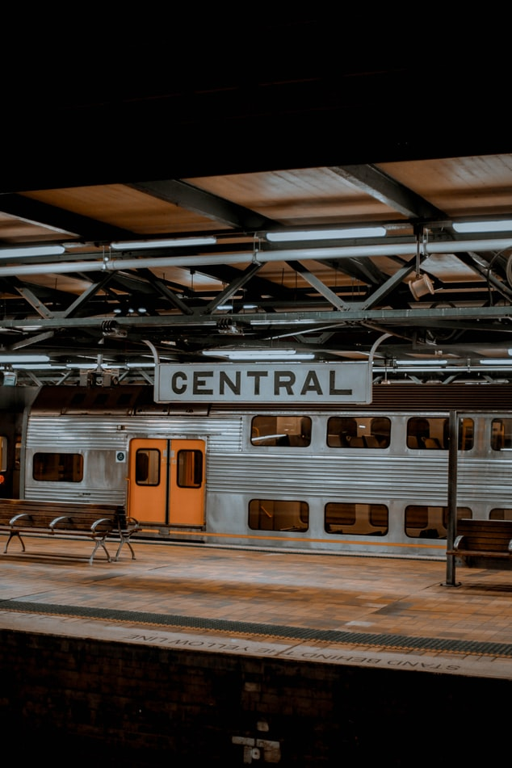

- Queensland
- Newsouthwales
- Victoria
- Australian Capial Territory
- South Australia
- Western Australia
- Northern Australia
- Tasmania
Newsouthwales
Newsouthwales(abbreviated as NSW) is a state on the east coast of Australia.
It borders Queensland to the north, Victoria to the south, and South Australia to the west. Its coast borders the Coral and Tasman Seas to the east.
The Australian Capital Territory is an enclave within the state. New South Wales' state capital is Sydney, which is also Australia's most populous city.
In June 2020, the population of New South Wales was over 8.1 million,[1] making it Australia's most populous state.
Just under two-thirds of the state's population, 5.3 million, live in the Greater Sydney area.
The demonym for inhabitants of New South Wales is New South Welshmen; but some have protested this term while there is no commonly accepted alternative
As of 21 February 2019 the Geographical Names Register (GNR) of NSW, which is maintained by the Geographical Names Board of New South Wales, lists 265 places that are assigned or recorded as towns in New South Wales
I lived at 2town which is Turella and Haymarket and i've been over 20towns i cant list cuz its to a lot
